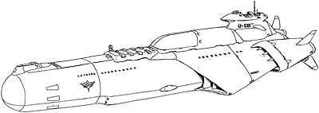

| Jukon Boomer Type Zeon Duchy Combat Submarine |
|
|  | |
General and Technical Data |
|
|
Unit Type: attack submarine Operator: Zeon Duchy Dimensions: length 248 meters Propulsion system: propellers, caterpillars Performance: maximum water cruising speed 85 knots Hangar capacity: 1x infantry, 2x mobile suits Launch catapults: 0 Fixed armaments: 6 x torpedo launcher; 8 x surface-to-air missile launcher Jukon II  RPG quick stats sheet RPG quick stats sheet
Armor Rating: 1.3 Speed Rating: .9 Maneuverability Rating: .5 Sensors Rating: 1.2
Early Rollout Version |
| Technical and Historical Notes | |
|
While Zeon engineers were hard at work developing their infamous marine mobile suits, an apparently obvious problem arose: how would the new MSM-03 Gogg (and later models) be useful without a method to get them in the water in the first place?
Given the Federation's strong surface navy, a conventional warship would be pointless. As such, a submarine was in order. It would be easy enough to copy an existing design, but this simply wouldn't do. Before long, a new ship with the usual flair of Zeon styling was in the water. The Jukon-class, as it came to be known, was a brutally effective unit. Based out of Odessa and California Base, the Jukons and their marine mobile suits wrought havoc across the Earth's oceans. Much faster than any Federal surface ship, the Jukon's exceptionally designed hull and experimental 'caterpillar' drive system allows it to quietly go about its business virtually undetected by conventional means. In addition to being an attack unit, its clandestine nature allows it to convey cargo and resources behind enemy lines with great efficiency. It is well armed with six forward-facing torpedo launchers as well as a set of vertically-mounted "boomer" missile launchers for long-range attack of costal installations. A small, watertight mobile suit hangar is constructed into the submarine's belly, allowing it to launch a pair of MSM's quietly, quickly, and discreetly. In order to facilitate longer-distance patrols, a larger Jukon model has also been recently put into production. The new type, modeled after the infamous U-99 flagship of the Cyclops Team, has improvements all across the board. A larger hangar allows it twice the marine mobile suit capability of the original. A larger armament of superior missiles give the new Jukon land-strike capability, which provide it with excellent fire-support capabilities for amphibious operations. Finally, the new-style Jukon retains all of the facilities of the original, including its caterpillar drive system, insulated hangar to quietly deploy mobile suits, and a high aquatic cruising speed. |
|